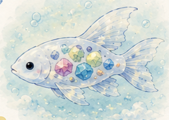
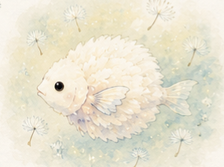
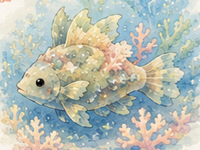

今週のユメウオ
今週紹介する不思議なユメウオたちの特徴や生態をまとめています。
目次
コイロウオ

体の中に小さな宝石を育てる魚です。 食べた鉱石や貝殻のかけらが、長い時間をかけて宝石のように輝き始めます。 一匹ずつ色や模様が違うため、「世界に一匹だけの魚」と呼ばれています。
フワリウオ

たんぽぽの綿毛のようにふわふわ漂う魚です。 流れに逆らわず、風や潮に身をまかせて旅を続けています。 春になると海面近くまで浮かび、小さな子どもたちにだけ姿を見せると言われています。
シオマモリウオ

サンゴや海そうの森を守る小さな魚です。 体には海底の色が映り込み、周りの景色と同じ色に変わることができます。 サンゴが元気に育つ海には、必ずこの魚が暮らしていると言われています。